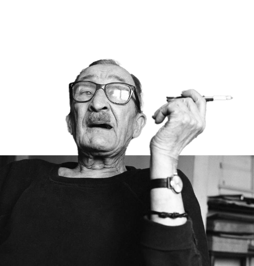

하퍼스 바자 Harper’s Bazaar에서 25년 간 재직하면서
미국 잡지 디자인에 새로운 혁명을 일으킨
알렉세이 브로도비치는 혁신적인 아트 디렉터로서,
또한 유명한 디자이너와 많은 사진 작가들을 배출한
최고의 교육자로서 20세기 디자인계를 이끌어 온 인물이다.
일생 동안 끊임없이 진보와 변화를 추구한 그는
‘어제는 시험, 오늘은 활동, 내일은 도전’이라는 자세로
항상 미래를 향해 나아가며 새로운 표현 방식을 추구하였고,
유럽의 아방가르드 예술의 모더니즘을 바탕으로 한
미국의 디자인 스타일을 유행시켰다.
알렉세이 브로도비치.
그는 러시아에서 파리로, 파리에서 다시 미국으로 이주하면서
군인에서 사진가, 디자이너, 아트 디렉터와 교육자로 새로운 상황에 맞추어
자신을 변화시키고 발전시켜온 그는 자신의 삶을 통해 계속해서
변화를 추구한 진정한 모더니즘의 화신이었다.